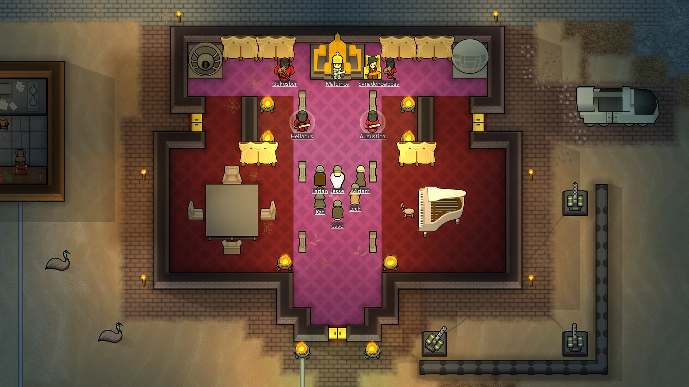
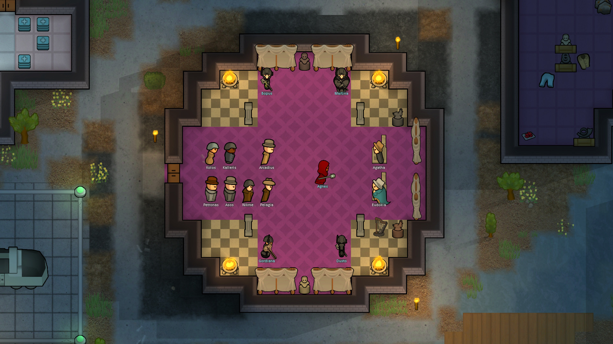
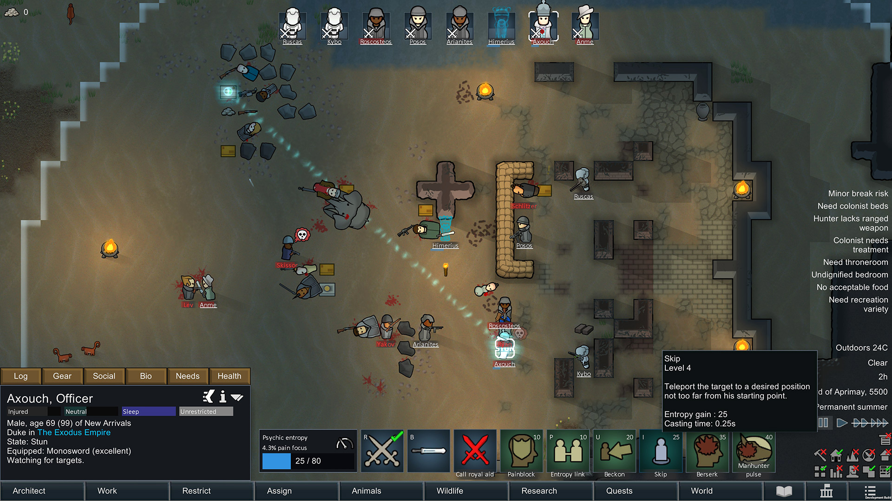
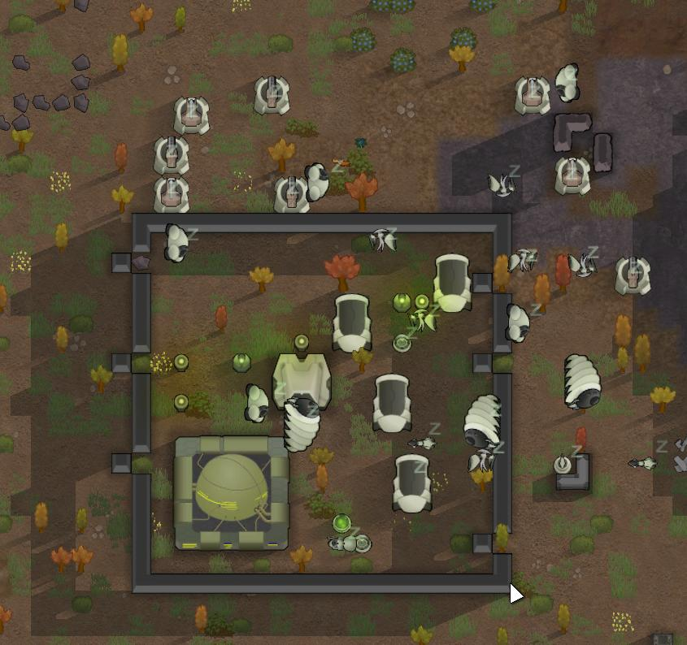

Rim World Royalty
On February 24, 2020, the first downloadable content (DLC), Royalty, was released with the 1.1 update, adding a new empire faction , Psychic Powers, Royal Titles and much more. "The Empire has arrived. Their refugee fleet settles the rimworld, and seeks allies. Their honor-bound culture wields hyper-advanced technology, while bowing to the ancient traditions of kings and queens. "

The Empire
The empire is a new ultratech faction - the main headline of the Royalty DLC. They make for powerful allies, or if you choose to betray them, powerful enemies. All empire soldiers are implanted with a death acidifier, preventing players from (easily) looting their high-tech gear.
Titles
Titles are bestowed by the empire as a sign of nobility. Having a higher title gives you many privileges with the empire, but comes with increasing demands. In order to rise up the noble ranks, your colonists must gain honor, a new currency entirely separate from goodwill. The primary way to get honor is to do quests for the empire. You can also get honor by selling gold or prisoners to a royal tribute collector. Noble colonists become haughty and demanding. In order to receive a noble rank at all, you must have a throne room that meets the royal requirements. While most noble colonists remain willing to do all types of jobs, they'll demand royal clothes and luxurious bedrooms. In constrast, the empire's nobles are conceited. They'll refuse to do some types of work or eat commoner food. Colonists with the greedy, jealous, or abrasive traits will also become conceited, and come with the same demands. In exchange, a title comes with various perks. The first is a psylink given by the empire, allowing access to special psycast powers. With permits, you can call in the empire for direct help - this can range aerial bombardment, to a transport shuttle, to a direct drop of glitterworld medicine. Only pawns of a sufficient title (Knight / Dame) will be able to trade with the empire's faction bases, and only pawns of at least Baron rank can interact with the empire's trade ships.
Psycasting
Psycasts are psionic abilities, manipulating reality beyond human understanding. They are "psychic" like how psychic drones and psychic soothes are psychic. The vast majority of psycasts are not direct, damage-dealing abilities. Instead, they focus on new ways to inhibit enemies or change the flow of combat. Blinding pulse lowers enemies' sight. Skip allows you to move a thing - friend, enemy, or item - anywhere within range. Other psycasts are useful outside of combat. Word of love creates romantic attraction, while word of serenity ends social fights and mental breaks. No enemy in the game will ever use any form of psycast, even if they have the requisite psylink. In combat, psycasts are limited by neural heat. You can overload on neural heat, at the cost of gimping your caster for a few days afterward. Outside of combat, psycasts are limited by psyfocus. In order to replenish psyfocus, your casters must meditate. Higher-level psycasters will have to meditate for hours every day. Nobles can meditate on their throne. Pyromaniacs can meditate to fire. Psychopaths can meditate to graves of their loved ones. Meditating counts as recreation, though like all recreation, colonists will get bored of constant meditation. The empire is one way to get psylinks, though they can be obtained through a few other ways. Most tribal pawns - those with Natural meditation - have a special connection with the anima tree. If they meditate at the tree for enough time, they can undergo a linking ritual. You can also get psylink neuroformers from quests. The Deserter quest will allow you to betray the empire for an opportunity to gain 2 psylink neuroformers. Note that there is no special "betray the empire" questline or mechanic, beyond the aforementioned quest. The empire can be re-allied with enough gifts or peace talks.
Mechanoid Clusters
Mechanoids have evolved. Mech clusters are a new type of major threat - stationary encampments which present a new tactical challenge. Like crashed ship parts, mech clusters always start dormant, but you may have to deal with them immediately. They put the player on the offensive, which contrasts with the defense-oriented fights in the base game. You can split mech clusters into 2 parts.
And, of course, clusters come with mechanoids. They can come sleeping, hidden in a mech capsule, or produced by a mech assembler. Mech clusters start dormant. Unless you shoot at a mech or build near the cluster, they won't wake up on their own. Count-down activators can wake mechs after a certain period of time. Proximity activators will wake mechs if you enter its radius. In any case, the condition causer will activate even if the rest of the mech cluster remains dormant. In addition, both mechs and pirates can deploy condition causers from far away. You must caravan or transport pod to its location, destroy the condition causers, and get out.
Other new Features:
- Quests
- Items
- Royal Ascent
The Royalty DLC adds a lot of quests. This DLC adds more quests than what the base game had. Some are simple. Accept a raid for a reward. Build a structure, for a reward. Others are more intrinsically complex. Host a noble, derpy animals, or desperate refugees. A quest may ask you to fight a huge mechanoid cluster, but also include help from elite Imperial cataphracts to make the battle winnable.
The Royalty DLC comes with a variety of high-tech gear, implants, and other items. Many require a techprint before you can research and create them yourself. The ultratech melee weapons cannot be created by your colony at all, only traded.
Once you have a pawn with the Count title, you can request a customary visit from the High Stellarch, along with 4 imperial guards. This visit lasts for 12 days. Like the ship launch, you'll have to contend with constant raids, from those who want to dethrone the stellarch. An additional challenge is the stellarch themselves - you must keep them happy enough throughout the stay.